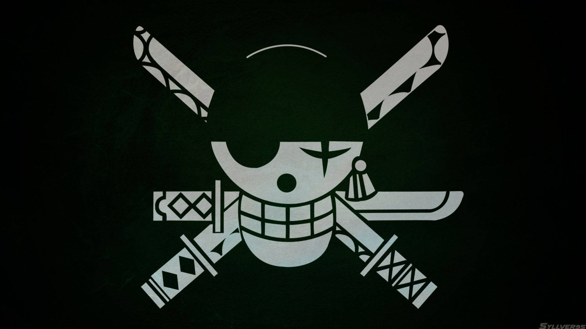
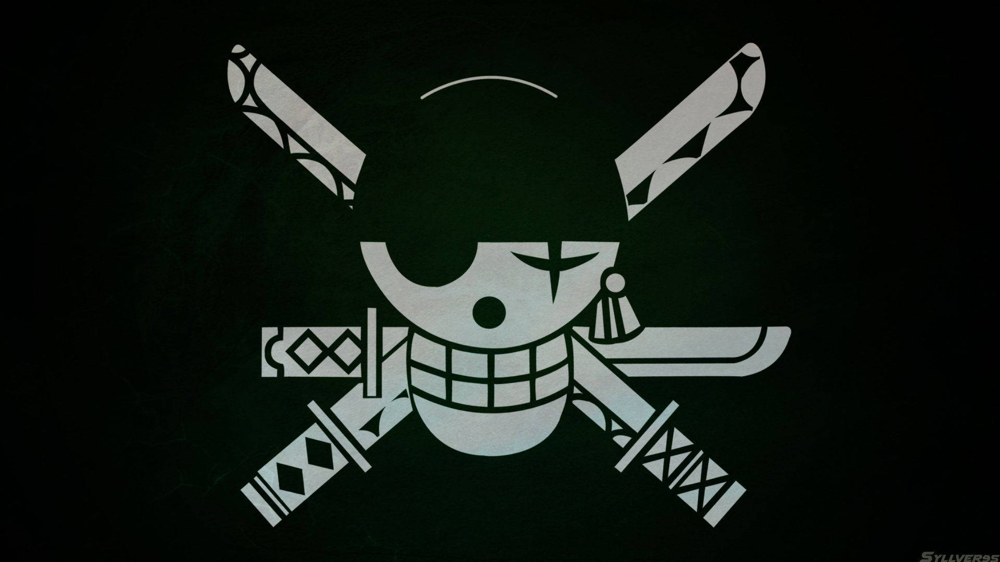
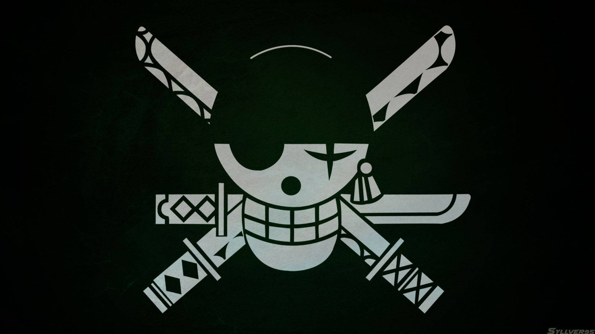

Top 8 Most Feared Flags In One Piece

Japanese Name: Bagī Kaizokudan
Total Bounty: At least 3,320,000,000 Berries
Captain: Buggy
Ship: Big Top
The Buggy Pirates, led by the enigmatic Captain Buggy, have a distinctive Jolly Roger that reflects their whimsical yet formidable nature. Their flag features the classic comic-style skull-and-crossbones, but with a twist: a large red nose and black “makeup” crosses on the eye sockets—both elements inspired by Buggy himself. Following the timeskip, an updated version of the Jolly Roger appears on Buggy’s hat, with smaller crossbones covering the skull’s eyes, mirroring his face paint. As part of their ever-evolving journey, the Buggy Pirates transitioned from an undistinguished presence in the East Blue to affiliations with the Alvida Pirates, the Seven Warlords, and eventually the Four Emperors through the Cross Guild. So, hoist the Buggy Pirate Flag, embrace the clown-style emblem, and set sail in pursuit of legendary treasures! 🏴☠️🤡
Japanese Name: Kurohige Kaizokudan
Total Bounty: At least 4,194,200,000 Berries
Captain: Marshall D. Teach
Ship: Saber of Xebec
The Blackbeard Pirates fly a distinctive flag that embodies their fearsome reputation. It features a plain black background adorned with three menacing skull heads: one facing left, one forward, and another looking right. The intercrossing bones in the background add an eerie touch. This iconic symbol represents Marshall D. Teach, commonly known as Blackbeard, who serves as the captain-turned-admiral of the Blackbeard Pirates. His flag reflects both his hidden strength and his unique connection to his Devil Fruits.
Japanese Name: Biggu Mamu Kaizokudan
Total Bounty: At least 10,121,500,000Berries
Captain: Charlotte Linlin
Ship: Queen Mama Chanter
The Big Mom Pirates are an infamous and powerful pirate crew in the One Piece universe. Led by their captain, Charlotte Linlin (better known as “Big Mom”), they were formerly one of the Four Emperors. Their flag mirrors the chaotic nature of their captain. It features a sinister skull surrounded by a heart-shaped frame adorned with candies and sweets, encapsulating their intimidating and sugar-fueled reputation1. The intricate motifs on their flag depict the crew’s heritage, ambition, and prowess, symbolizing their pursuit of control. Within the series, it evokes fear, respect, and reverence, amplifying the crew’s imposing nature2. Their Jolly Roger is a skull with thick lips, wearing a pirate tricorne based on their captain’s appearance, set against a fluffy background with candy canes crossed behind it
Japanese Name: Hyakujū Kaizokudan
Total Bounty: At least 11,179,100,000 Berries
Captain: Kaido
Ship: Unnamed ship
The Beasts Pirates are an extremely infamous and powerful pirate crew led by their governor-general, Kaidou, formerly one of the Four Emperors. Their Jolly Roger consists of a skull placed centrally above four intersected crossbones, similar to the Blackbeard Pirates’ flag1. The crew is based in Wano Country, specifically headquartered on Onigashima. For the past 26 years, the Beast Pirates consolidated their power in Wano through an alliance with the country’s shogun, Kurozumi Orochi. Within the past four years, they partnered with Donquixote Doflamingo and Caesar Clown to create artificial Zoan Devil Fruits called SMILE Fruits, leading to the crew having over 500 users with Devil Fruit powers.
Japanese Name: Akagami Kaizoku-dan
Total Bounty: At least 4,142,900,000 Berries
Captain:Shanks
Ship: Unnamed (Previously), Red Force (Present)
The Jolly Roger features a lifelike skull adorned with two crossed sabres. These crimson stripes, outlined in black, intersect diagonally across the left eye socket, representing the scars Shanks received from his encounter with Blackbeard. After the Summit War of Marineford, the crew modified their Jolly Roger to depict the skull’s jaw closed shut. Shanks, as one of the Four Emperors, wields immense power, evident from his massive bounty of 4,048,900,000 Berries, the highest among the current Emperors2. His crew’s flag embodies their resilience, courage, and determination as they sail the treacherous seas of the Grand Line. 🏴☠️
Japanese Name: Rojā Kaizokudan
Total Bounty: Over 5,564,800,000 Berries
Captain: Gol D. Roger
Ship: Oro Jackson
The Roger Pirates’ Jolly Roger is a distinctive symbol associated with their crew. It features a skull with a long, curly mustache resembling Gol D. Roger himself. This iconic flag represents their indomitable spirit and their pursuit of adventure and freedom. As their captain was known as the “King of the Pirates,” the Roger Pirates were one of the strongest crews of their time. They were the only crew to conquer the Grand Line and reach Laugh Tale by deciphering all four Road Poneglyphs. By recruiting Kozuki Oden, they uncovered the true history of the world and the meaning of the initial D. Their accomplishments led to Roger receiving the highest known bounty in history from the World Government, with other members of the crew also becoming heavily wanted men whose bounties are still active 25 years after the crew’s dissolution.
Japanese Name: Shirohige Kaizokudan
Total Bounty: Over 10,010,000,000 Berries
Captain: Edward Newgate (Previously), Marco (Interim)
Ship: Moby Dick
Whitebeard’s flag is a famous emblem from the anime “One Piece.” It represents the Whitebeard Pirates, led by the powerful pirate Edward Newgate, also known as Whitebeard. The flag’s design is simple yet iconic: a large skull with a grand mustache that mirrors Whitebeard’s own, and crossbones behind the skull, positioned vertically. This flag is more than just a symbol; it’s a statement of power, unity, and respect. Whitebeard was known as one of the Four Emperors of the Sea, making his flag feared and respected across the oceans. His crew members showed their loyalty by wearing this emblem proudly, with some even tattooing it on their bodies.
Japanese Name: Mugiwara no Ichimi
Total Bounty: 8,816,001,000 Berries
Captain: Monkey D. Luffy
Ship: Going Merry (Previously), Thousand Sunny (Present)
The Jolly Roger emblem of the Straw Hat Pirates is a unique and memorable symbol. It features a cartoon-like depiction of the traditional skull and crossbones, with the skull wearing Luffy’s iconic straw hat. Interestingly, due to Luffy’s somewhat morbid drawing skills, it was actually Usopp who designed the flag. This emblem not only graces their flag but has also been prominently displayed on the sails of their ships—the Going Merry (their first official Straw Hat ship) and later the Thousand Sunny. As the crew continues their journey in the New World, they disrupt the balance of the Three Great Powers and face formidable foes.
Conclution: In the vast world of One Piece, Jolly Roger flags serve as more than mere symbols—they embody the essence of each pirate crew. From the Straw Hat Pirates’ cheerful grin to the Blackbeard Pirates’ menacing three skulls, these flags tell tales of ambition, camaraderie, and adventure. The Blackbeard Pirates’ flag, with its three skulls against a black backdrop, epitomizes ruthlessness and unwavering resolve. Controversy surrounds its resemblance to the Rising Sun flag, but Eiichiro Oda’s creative choices reflect Japanese cultural context. As we sail alongside Luffy and his crew, these flags remind us that the journey is as important as the destination. Adventure awaits, and the seas are ours to explore! 🌊⚓